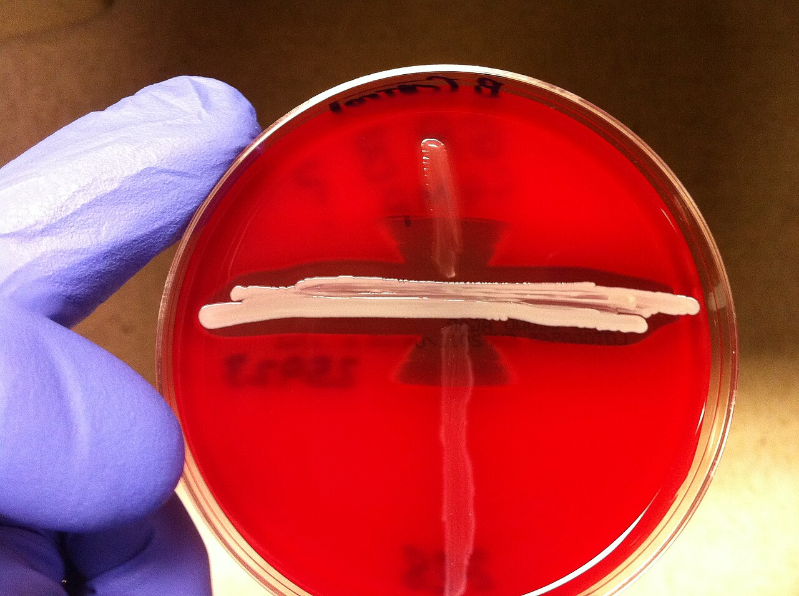

"Swab + no pré-natal = antibiótico no consultório" — esse é o erro que a página desmonta. Antibiótico é intraparto.
Parte E · InfecçõesIDs 115–134E4 · Pegadinha
Janela BR 35–37 × ACOG 36–37+6
Prevenção de sepse por estreptococo do grupo B (GBS / SGB): swab vaginal e retal no fim da gestação. No Brasil / MS: coletar entre 35 e 37 semanas. ACOG: janela 36 a 37 semanas e 6 dias; no Brasil/MS a janela cobrada permanece 35 a 37. GBS é o maior causador de sepse neonatal precoce.
Quem não se rastreia (indicação absoluta de IAP)
Duas pacientes não se rastreia (já têm indicação de antibiótico intraparto): (1) bacteriúria por GBS na gestação atual — mesmo tratada e com urocultura depois negativa; (2) filho anterior com infecção grave por GBS. Pegadinha: bacteriúria GBS atual, mesmo com cultura de controle negativa, mantém profilaxia intraparto.
Antibiótico intraparto e doses
Swab positivo entre 35–37 sem: informação para a maternidade — não é para "passar antibiótico no pré-natal". Antibiótico = intraparto. Três riscos se status desconhecido: (1) trabalho de parto prematuro; (2) febre intraparto; (3) bolsa rota > 18 h.
Penicilina cristalina:5 milhões UI ataque + 2,5 milhões UI de 4/4 h até clampear o cordão. Alternativa: ampicilina EV2 g ataque + 1 g de 4/4 h até clampear.
Cesárea eletiva e validade de 5 semanas
Cesariana eletiva (fora de trabalho de parto e com bolsa íntegra) dispensa antibiótico para GBS — mesmo com swab +, bacteriúria GBS ou filho anterior acometido. Swab negativo vale por até 5 semanas; depois disso = status desconhecido.
Resumo operacional: Swab 35–37 (BR). IAP: penicilina 5 mi + 2,5 mi 4/4 h ou ampicilina 2 g + 1 g 4/4 h. Cesárea eletiva dispensa. Swab negativo vale 5 sem.
Fluxograma GBS: indicação absoluta, swab 35–37, IAP no parto e cesárea eletiva.

S. agalactiae (GBS) · Cultura microbiológica · Domínio público
Quiz — Página 9
Q1. Bacteriúria por GBS na gestação atual, tratada, urocultura de controle negativa. Conduta no parto:
A Sem IAP — cultura negativou.
BIAP — indicação absoluta mantida.
C Só se febre.
D Swab obrigatório para decidir.
✓ Correto! Bacteriúria GBS na gestação atual = indicação absoluta de IAP, mesmo com urocultura de controle negativa.
✗ Incorreto. Bacteriúria GBS na gestação atual mantém indicação de IAP independentemente do controle.
Q2. Swab positivo às 36 semanas. Conduta no consultório de pré-natal:
A Antibiótico oral por 7 dias agora.
B Registrar para IAP no parto — não "tratar o swab" no PN.
C Cesárea eletiva obrigatória.
D Repetir swab semanal.
✓ Correto! Swab + = informação para IAP no parto, não para antibiótico ambulatorial no pré-natal.
✗ Incorreto. Swab positivo não se trata no consultório — registra-se para IAP no parto.
Q3. Dose de penicilina cristalina para IAP:
A 1 mi UI 6/6 h.
B5 mi UI ataque + 2,5 mi UI 4/4 h até clampear.
C 2 g ataque IM único.
D Só após o clampeamento.
✓ Correto! Penicilina cristalina: 5 milhões UI ataque + 2,5 milhões UI 4/4 h até clampear o cordão.
✗ Incorreto. A dose é 5 milhões UI ataque + 2,5 milhões UI de 4/4 h até clampear.